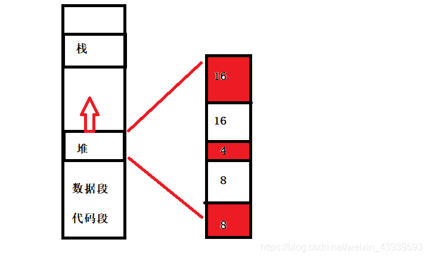

栈由操作系统自动进行分配和释放，用于存放函数的参数值、局部变量的值等，具有高效性。
堆一般由程序员手动进行分配和释放，效率比栈低很多。
栈使用一级缓存，存储在处理器核心中，调用完成后立即释放，速度较快。
堆存储在二级缓存或主存中，速度相对较慢。
堆：堆的分配方向是向上的，即向地址较大的方向分配。当堆需要扩展时，会向高地址方向增长。
栈：栈的分配方向是向下的，即向地址较小的方向分配。当栈需要扩展时，会向低地址方向增长。
堆：堆上的内存在分配时并不会被立即释放，需要手动进行内存释放操作。堆上的数据可以在程序的任意位置进行访问，不受函数的调用关系限制。
栈：栈上的内存分配和释放是自动进行的，随着函数的调用和返回进行相应的操作。栈上的数据只在特定的作用域内有效，函数执行完成后会自动释放。
栈的空间大小一般较小，通常最多为2MB，超过则会报溢出错误。
堆的空间比较大，理论上可以接近3GB（对于32位程序来说）。
栈操作遵循"后进先出"的原则，不会有内存块从栈中弹出，因此不会产生碎片。
堆是通过动态分配内存的方式进行分配和释放，频繁的申请和释放内存可能会引发内存碎片问题。
解决办法如下：
内存碎片是指在内存管理过程中产生的未被有效利用的零散、不连续的内存空间。主要分为两种类型：内部碎片和外部碎片。
解决内存碎片问题的方法可以包括：
内存池（Memory Pool）是一种动态内存分配与管理技术。通常情况下习惯使用new/delete/malloc/free等API申请分配和释放内存，这样导致的后果是：当程序长时间运行时，由于所申请的内存块大小不定，频繁使用时会造成大量的内存碎片从而降低程序和操作系统的性能。
内存池则是在真正使用内存之前，先申请分配一大块内存(内存池)留作备用，当我们申请内存时，从池中取出一块动态分配的内存，释放内存时，再将我们使用的内存释放到我们申请的内存池内，再次申请内存池也可以再取出来使用。并且，尽量与周边的内存块合并。若内存池不够时，则自动扩大内存池，从操作系统中申请更大的内存池。
解决内存碎片问题。
假设系统依次分配了16,16,4,8,8字节，接着释放了16字节和8字节归还给了系统（红色表示还未归还给系统），那么现在堆区空闲了一个16字节的空间和一个8字节的空间。这是如果用户要想申请出一个24字节的空间，那么系统就无法分配连续的空间给用户。这就是内存碎片的问题。
初始化为0的全局变量通常会被分配到程序的BSS（Block Started by Symbol）段。BSS段是用于存放未初始化或初始化为0的全局变量和静态变量的一部分内存空间。在程序加载时，系统会自动将BSS段中的变量初始化为0。
已经明确初始化为非零值的全局变量会被分配到程序的数据（Data）段。Data段用于存放已经初始化的全局变量和静态变量。
总结来说，初始化为0的全局变量通常会被分配到BSS段，而已初始化为非零值的全局变量则会被分配到Data段。